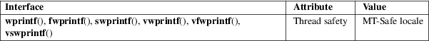

wprintf, fwprintf, swprintf, vwprintf, vfwprintf, vswprintf − formatted wide-character output conversion
Standard C library (libc, −lc)
#include
<stdio.h>
#include <wchar.h>
int
wprintf(const wchar_t *restrict format, ...);
int fwprintf(FILE *restrict stream,
const wchar_t *restrict format, ...);
int swprintf(wchar_t wcs[restrict
.maxlen], size_t maxlen,
const wchar_t *restrict format, ...);
int
vwprintf(const wchar_t *restrict format,
va_list args);
int vfwprintf(FILE *restrict stream,
const wchar_t *restrict format, va_list
args);
int vswprintf(wchar_t wcs[restrict
.maxlen], size_t maxlen,
const wchar_t *restrict format, va_list
args);
Feature Test Macro Requirements for glibc (see feature_test_macros(7)):
All functions
shown above:
_XOPEN_SOURCE >= 500 || _ISOC99_SOURCE
|| _POSIX_C_SOURCE >= 200112L
The wprintf() family of functions is the wide-character equivalent of the printf(3) family of functions. It performs formatted output of wide characters.
The wprintf() and vwprintf() functions perform wide-character output to stdout. stdout must not be byte oriented; see fwide(3) for more information.
The fwprintf() and vfwprintf() functions perform wide-character output to stream. stream must not be byte oriented; see fwide(3) for more information.
The swprintf() and vswprintf() functions perform wide-character output to an array of wide characters. The programmer must ensure that there is room for at least maxlen wide characters at wcs.
These functions are like the printf(3), vprintf(3), fprintf(3), vfprintf(3), sprintf(3), vsprintf(3) functions except for the following differences:
|
• |
The format string is a wide-character string. | ||
|
• |
The output consists of wide characters, not bytes. | ||
|
• |
swprintf() and vswprintf() take a maxlen argument, sprintf(3) and vsprintf(3) do not. (snprintf(3) and vsnprintf(3) take a maxlen argument, but these functions do not return −1 upon buffer overflow on Linux.) |
The treatment of the conversion characters c and s is different:
|
c |
If no l modifier is present, the int argument is converted to a wide character by a call to the btowc(3) function, and the resulting wide character is written. If an l modifier is present, the wint_t (wide character) argument is written. | ||
|
s |
If no l modifier is present: the const char * argument is expected to be a pointer to an array of character type (pointer to a string) containing a multibyte character sequence beginning in the initial shift state. Characters from the array are converted to wide characters (each by a call to the mbrtowc(3) function with a conversion state starting in the initial state before the first byte). The resulting wide characters are written up to (but not including) the terminating null wide character (L'\0'). If a precision is specified, no more wide characters than the number specified are written. Note that the precision determines the number of wide characters written, not the number of bytes or screen positions. The array must contain a terminating null byte ('\0'), unless a precision is given and it is so small that the number of converted wide characters reaches it before the end of the array is reached. If an l modifier is present: the const wchar_t * argument is expected to be a pointer to an array of wide characters. Wide characters from the array are written up to (but not including) a terminating null wide character. If a precision is specified, no more than the number specified are written. The array must contain a terminating null wide character, unless a precision is given and it is smaller than or equal to the number of wide characters in the array. |
The functions return the number of wide characters written, excluding the terminating null wide character in case of the functions swprintf() and vswprintf(). They return −1 when an error occurs.
For an explanation of the terms used in this section, see attributes(7).

C11, POSIX.1-2008.
POSIX.1-2001, C99.
The behavior of wprintf() et al. depends on the LC_CTYPE category of the current locale.
If the format string contains non-ASCII wide characters, the program will work correctly only if the LC_CTYPE category of the current locale at run time is the same as the LC_CTYPE category of the current locale at compile time. This is because the wchar_t representation is platform- and locale-dependent. (The glibc represents wide characters using their Unicode (ISO/IEC 10646) code point, but other platforms don’t do this. Also, the use of C99 universal character names of the form \unnnn does not solve this problem.) Therefore, in internationalized programs, the format string should consist of ASCII wide characters only, or should be constructed at run time in an internationalized way (e.g., using gettext(3) or iconv(3), followed by mbstowcs(3)).
fprintf(3), fputwc(3), fwide(3), printf(3), snprintf(3)